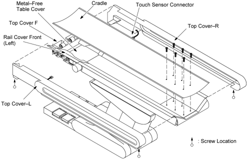
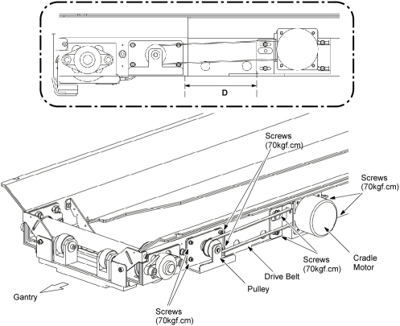
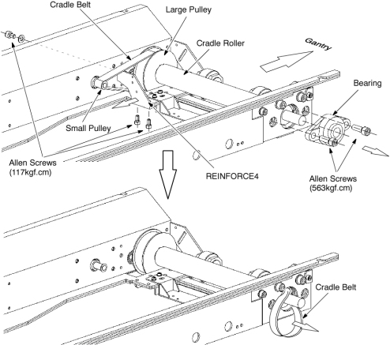
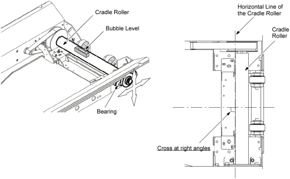

Operating Documentation
Direction 5181166-800, Rev# 7
BrightSpeed Select Service Methods Adv
Operating Documentation |
| Required Persons | Preliminary Reqs | Procedure | Finalization |
|---|---|---|---|
| 1 |
| Last Revised: | 16 March 2007 |
| Item | Qty | Effectivity | Part# | Manufacturer | |
|---|---|---|---|---|---|
| Adjustment Tool | 1 | - | 2326244 | - | |
| Bubble Level | 1 | - | - | - | |
| Square | 1 | - | - | - | |
| Item | Qty | Effectivity | Part# | Manufacturer | |
|---|---|---|---|---|---|
| Cradle Belt | 1 | - | 2201854 | - | |
| Understand and follow the Safety Guidelines Manual. | |
Raise the Table to its highest position.
| NOTE: | If the Table up/down movement is inoperative, use the service power cable to raise the Table (refer to Enforced Table Elevation) . |
Move the cradle carriage to the mechanical OUT limit position by hand.
Remove power from Table by turning off “120VAC”, “Axial Drive” and “HVDC” switches on the service switch panel.
Remove the following cover and component from the Table:
Top Cover R / L (Refer to Table Covers Removal)
Top Cover F (Two(2) Screws)
Cradle (Refer to Cradle)
Metal–Free Table Cover (Four(4) Screws)
Rail Cover Front (Left/Right) (Two(2) Screws x 2)
Illustration 1: Table Covers Removal

Release belt tension:
Measure the distance ‘D’ (between the pulley and cradle motor).
Loosen 4 screws that fasten the cradle motor to the Table frame.
Slide the cradle motor toward the Gantry, to remove tension from the drive belt.
Loosen 4 screws that fasten the pulley to the Table frame.
Slide the pulley toward the Gantry, to remove tension from the cradle belt.
Illustration 2: Release Belt Tension

Remove the cradle belt:
Remove a bearing of the cradle roller from right side of the Table by unscrewing its 2 Allen screws.
Remove a REINFORCE4 from the Table frame by unscrewing its 3 Allen screws.
Remove the cradle belt from the small pulley and the large pulley.
Pass the belt through the hole of the Table frame, and out of the Table.
Illustration 3: Cradle Belt Removal

Install the new cradle belt by referring to Step 6.d through Step 6.a.
(Properly position the new belt on and around the cradle pulley and the small pulley)
Adjust position of the cradle roller:
Loosen 2 Allen screws that fasten the bearing of the cradle roller to the Table frame.
Place the bubble level at the position as shown in Illustration 4.
Level the cradle roller by moving the bearing.
Tighten the 2 Allen screws (Torque: 50kgf.cm)
Illustration 4: Position of the Cradle Roller Adjustment

Put the cradle on the Table, and perform ‘GAP BETWEEN CRADLE AND CRADLE SUPPORT’ adjustment according to the CD–ROM manual, Functional Check & Adjustment.
After you install the new belt: (see Illustration 2)
Slide the pulley away from the Gantry, and verify no slack in the cradle belt.
Perform ‘CRADLE BELT TENSION’ adjustment according to the CD–ROM manual, Functional Check & Adjustment.
Slide the cradle motor away from the Gantry, and adjust position of the cradle motor to meet the ‘D’ recorded at Step 5.a, and fix the cradle motor.
Restore the Table to original configuration.
Verify that the cradle moves In and Out normally.